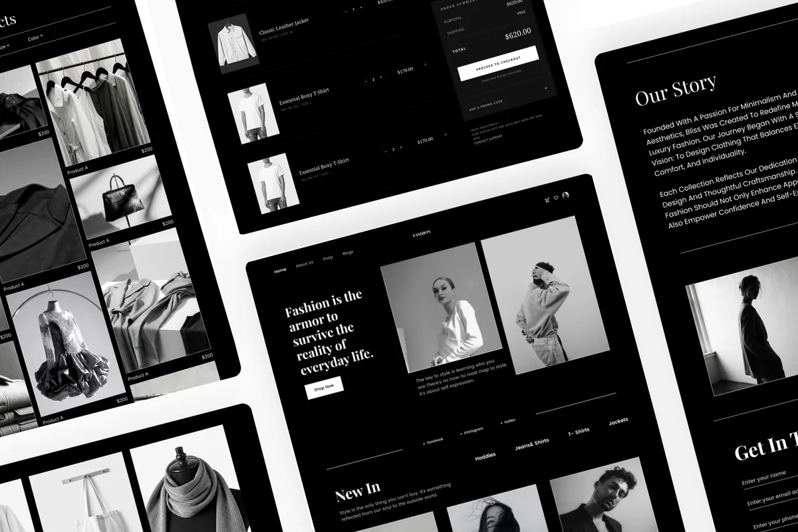

FASHION COMMERCE · MOBILE-FIRST
Atelier
Một concept commerce nơi editorial mood hỗ trợ quyết định thay vì cạnh tranh với product discovery và shopping action.

Bối cảnh, phạm vi và vai trò
Atelier là concept tự khởi xướng, xuất phát từ sự căng thẳng giữa fashion storytelling mang tính editorial và nhịp thực dụng của mua sắm online. Trải nghiệm hiện tại xây một thế giới Fall / Winter, New In products, curated collections và một lớp editorial riêng.
Đóng góp của tôi
UI/UX direction, responsive interface design, visual hierarchy và front-end implementation.
Phạm vi
Home, discovery, collection storytelling, product entry points và editorial content rhythm.
Ràng buộc chính
Duy trì một fashion mood riêng mà không khiến product discovery giống poster hơn là interface.
Tiêu chí thành công
Người dùng hiểu point of view, tìm được product route và nhận ra next action mà không cần giải thích thêm.
Editorial nhưng vẫn phải mua sắm được
Làm sao một trải nghiệm fashion có thể expressive và editorial nhưng vẫn khiến discovery, comparison và purchase trở nên nhẹ? Hướng giải quyết không phải loại bỏ mood, mà buộc mỗi yếu tố biểu đạt phải có một vai trò trong hành trình.
Biến mood thành một đường đi
01 / Editorial entry
Hero thiết lập collection point of view trước, sau đó mở một đường trực tiếp vào shopping thay vì bắt hình ảnh gánh toàn bộ trải nghiệm.
02 / Product rhythm
New In chuyển broad mood thành những product moment có thể scan, với visual và seasonal cue rõ hơn.
03 / Collection context
Featured Collections và The Edit kéo dài câu chuyện nhưng không trộn editorial reading với product-level decision quá sớm.
04 / Action clarity
Shop Now và Read Story giữ hai ý định khác nhau thành hai đường rõ ràng: transactional path hoặc deeper brand path.
Thiết kế hiện tại cho phép điều gì?
Build hiện tại tạo một sequence rõ: thiết lập thế giới, giới thiệu sản phẩm mới, mở collection route rồi đưa người dùng vào một editorial read dài hơn. Đây là outcome định tính của design, không phải conversion result đã đo.
Không có analytics, usability-test recordings hoặc purchase data được cung cấp. Validation tiếp theo nên kiểm tra việc tìm sản phẩm, phân biệt product content với editorial content và hoàn thành intended next action trên mobile.
Biểu đạt mạnh hơn khi hierarchy đủ rõ
Atelier cho thấy visual restraint có thể bảo vệ một concept biểu đạt mạnh. Vòng lặp tiếp theo nên tập trung product detail và checkout, nơi editorial confidence phải chuyển thành practical confidence: size, material, availability và return information cần được cân nhắc kỹ như opening image.